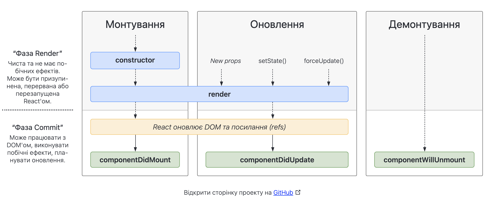
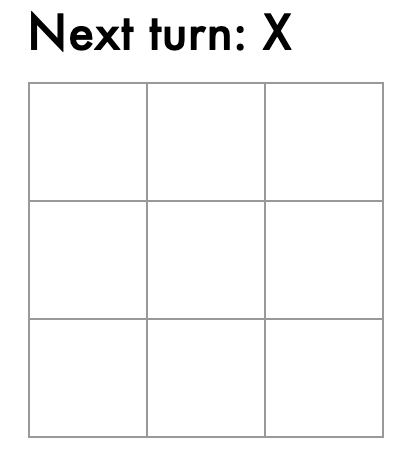
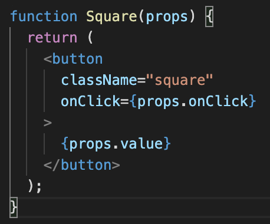
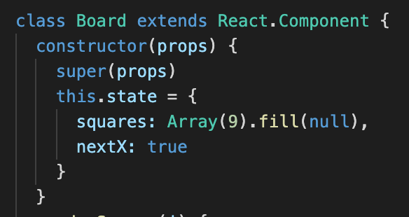
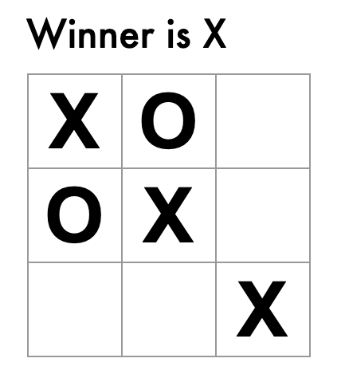

Тема та постановка задачі
Тема: React.
Мета: придбати практичні навички роботи з React.
Створення React-додатку
Команда для Node.js
npx create-react-app my-app
Для запуску веб-додатку
npm start

В початок файлу index.js додати наступни рядки
import React from 'react';
import ReactDOM from 'react-dom';
import './index.css';
render()

Метод render() — єдиний необхідний метод в класових компонентах.
Під час виклику він перевіряє this.props та this.state і повертає один з наступних типів:
- React-елементи. Зазвичай створені за допомогою JSX. Наприклад,
і
є React-елементами, які інструктують React відрендерити вузол DOM або інший компонент
визначений користувачем, відповідно.
- Масиви та фрагменти. Дозволяють повернути декілька елементів під час рендерингу. Перегляньте
документацію для фрагментів, щоб дізнатися більше.
- Портали. Дозволють рендерити дочірні елементи в іншому піддереві DOM. Перегляньте документацію для
порталів, щоб дізнатися більше.
- Рядки і числа. Будуть відрендерені як текстові вузли в DOM.
- Логічні значення чи null. Не рендерять нічого. (Існують, здебільшого, для підтримки шаблону return test
&&
, де test — логічне значення.)
class Game extends React.Component {
render() {
return (
<div className="game">
<div className="game-board">
<Board />
</div>
</div>
);
}
}

Класи
React дозволяє вам визначати компоненти як класи чи функції. Компоненти визначені як класи, наразі надають
більше можливостей. Щоб визначити класовий React-компонент, вам потрібно розширити React.Component
class Board extends React.Component {
constructor(props) {
super(props)
this.state = {
squares: Array(9).fill(null),
nextX: true
}
}
Приклад функціонального компоненту
function Square(props) {
return (
<button className="square" onClick={props.onClick}>
{props.value}
</button>
);
}
Props
Коли React бачить елемент, що представляє визначений користувачем компонент, він передає атрибути JSX та
дочірні компоненти цьому компоненту як єдиний об’єкт. Ми називаємо цей об’єкт “пропси”.

State
Компонент потребує state, коли якісь дані в ньому змінюються з часом.
Найбільша різниця між state і props полягає в тому, що props передаються з батьківського компонента, а state
керується самим компонентом. Компонент не може змінювати власні props, але може змінювати state.

ВИСНОВКИ

В рамках даної лабараторної я придбала практичні навички роботи React. Для засвоєння отриманих знань було
написано гру хреситки-нулики.
Переваги React
- В основі прості мови програмування.
- Надзвичайна гнучкість програми.
- Використання DOM.
- Додаток витримує великі навантаження.
- Забезпечує незмінність батьківських даних.
Недоліки
- Невпорядкованість документації.
- Великий вибір інструментів ставить в тупик.
- Для освоєння всіх нюансів потрібен тривалий час..